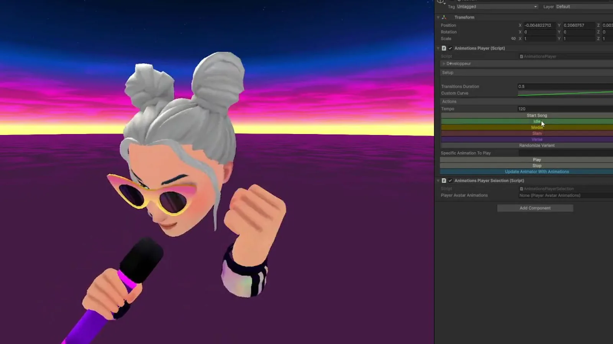
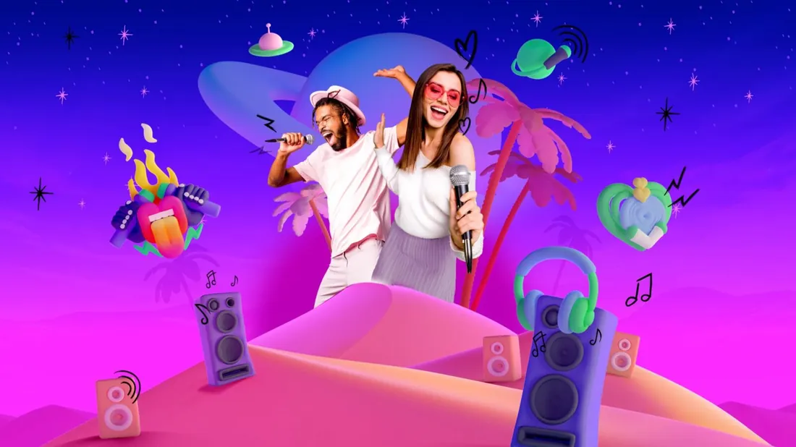
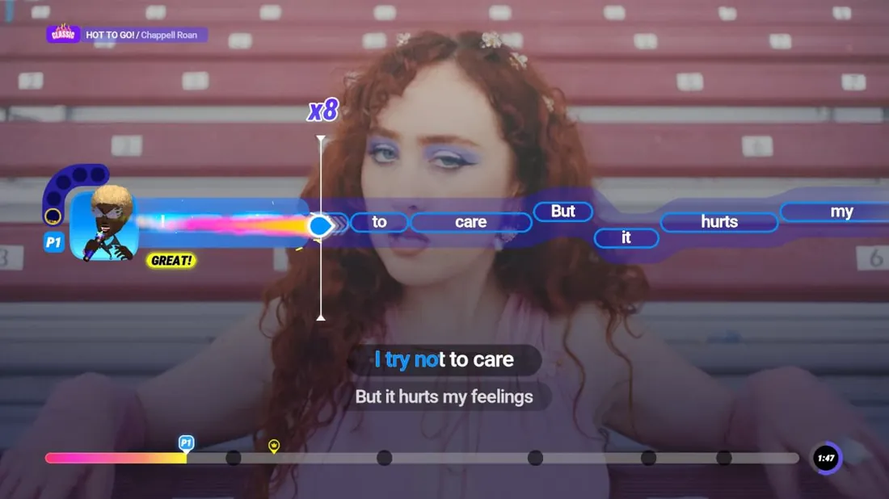
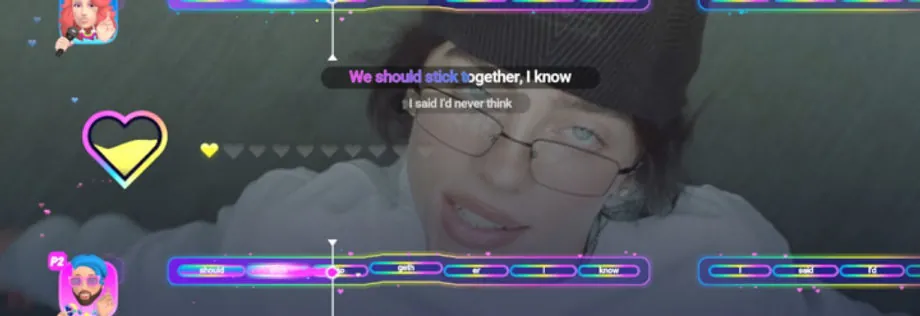

Let's Sing
Annual karaoke franchise — four editions in one ship window, six console targets. I built the tools that took the developer out of the animation loop, and the runtime and rendering work that kept the characters alive on every platform.
The brief
That cadence put pressure on three places at once. The animation team could not afford to wait on a developer to find out whether a clip was correct. The runtime character had to look alive while authored animation played. The renderer had to hold a fixed art direction inside a fixed frame budget on every target.
The animator's loop
I built an animation validation tool in Unity (C#) around the workflow the team already had. Animators drop clips into a folder, open a scene, and a single click applies the animation to a test rig. Scale and transform errors that were invisible in the DCC — and previously only surfaced after a developer round-trip — are now caught by the animator in seconds.

Built to fit the animation team's existing workflow rather than force a change to it. Same clips, same folder, same scene. The only thing removed was the wait.
Eyes that react while the clip plays
I built a runtime gaze system that decouples eye and pupil control from the baked animation. The authored performance keeps playing; the eyes stay live, driven by what happens on screen. A character can hold a performed pose and still look at the right thing at the right moment.
Authored in the clip
Body, lips and performance timing — reviewed as animation, locked in the bake.
Driven at runtime
Eye direction and pupil state — left out of the bake so they can answer on-screen events while the performance plays.
Six targets, one visual bar
Draw call reduction came through LOD strategies and batching, holding the visual targets across a wide performance spread so the weakest platform could not quietly redefine the look.
Holding the look inside the budget
That made it R&D rather than a settings pass: trying real-time rendering techniques against the intended look, measuring what each one cost, and keeping only what survived on every platform. The target was never "close enough on the strongest console" — it was the same art direction everywhere, at a frame rate that held.
Result
The automated character render pipeline behind this content is documented separately as the Automated Blender Render Pipeline case study.
The look the budgets had to protect


